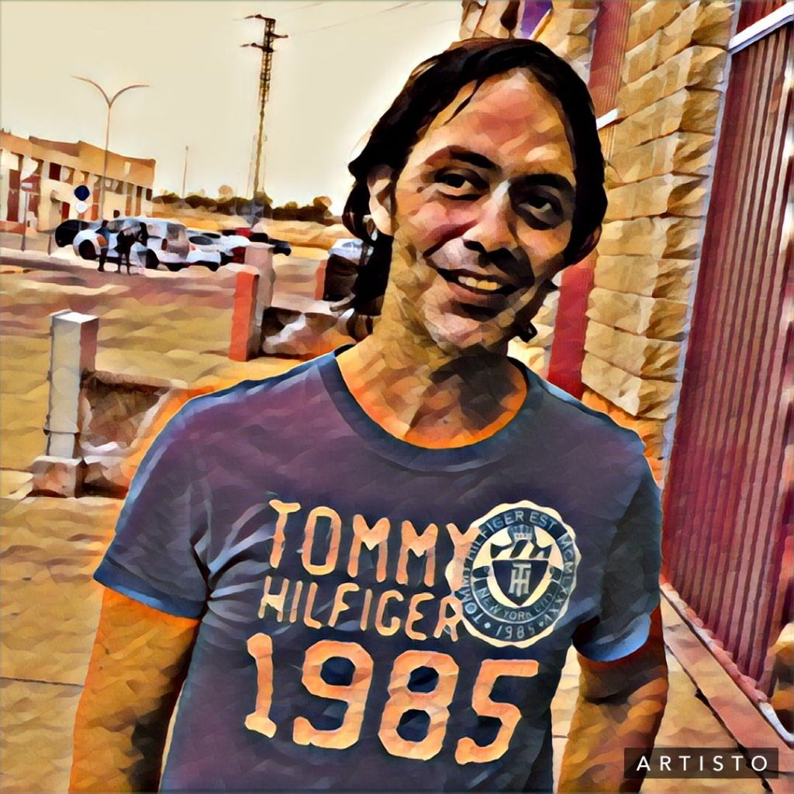
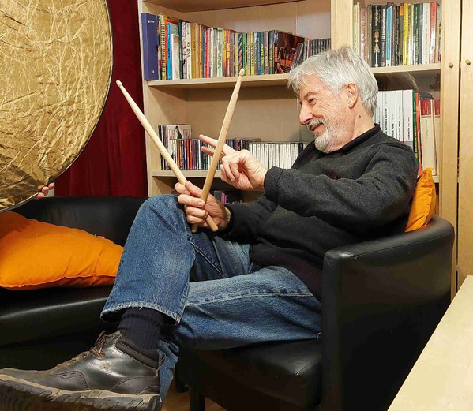
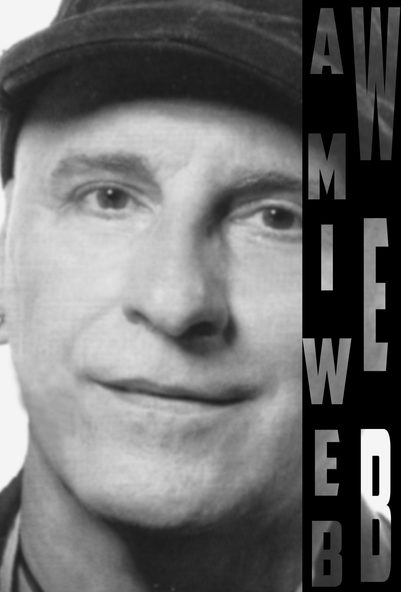

El alma y motor creativo de The Research Band. Más que una agrupación musical, una ideología de autor que combina artesanía melódica con tecnología de producción de vanguardia 2026.
Los 5 virtuosos de la guitarra, saxofón, violín, batería y percusión vocal que integran la formación oficial del grupo:

Formado en el Conservatorio Paganini de Génova. Sensibilidad mediterránea y virtuosismo moderno.

Curtido en Sevilla y Granada. Soplo jazzístico de vanguardia y matices sonoros propios.

Afincada en Sanlúcar de Barrameda. Textura soul, blues y percusión orgánica que da pulso al grupo.

Formada en Madrid y París. Aporta una dimensión cinematográfica y emotiva de vanguardia.

Formado en Senzoku Gakuen y UCLA. Virtuosismo técnico, polirritmias y pulso orgánico híbrido.
Músicos extraordinarios y compañeros de trayectoria en producciones y directos:

Guitarra y Voz

Teclado y Voz

Batería / Compositor

Compositor / Voz

Piano / Producción